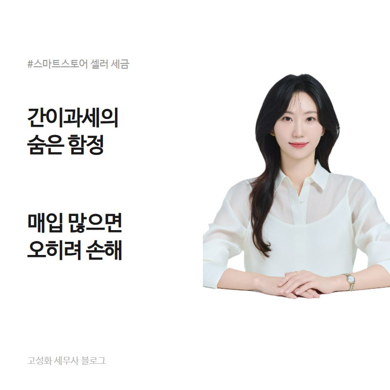
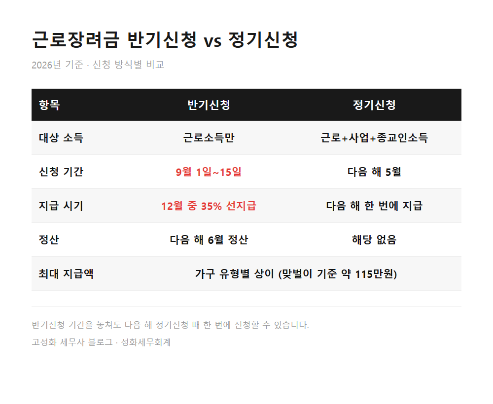
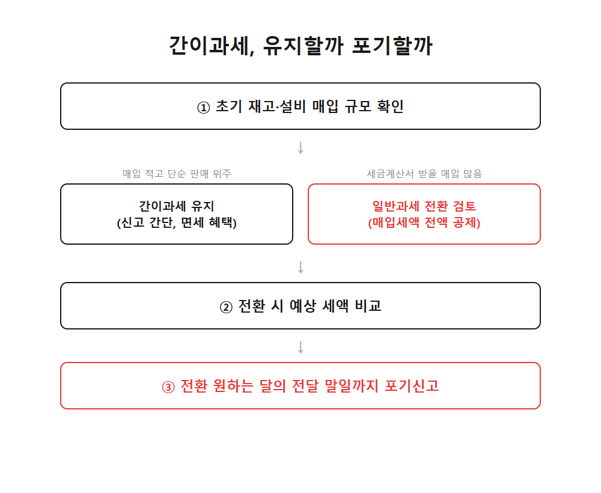
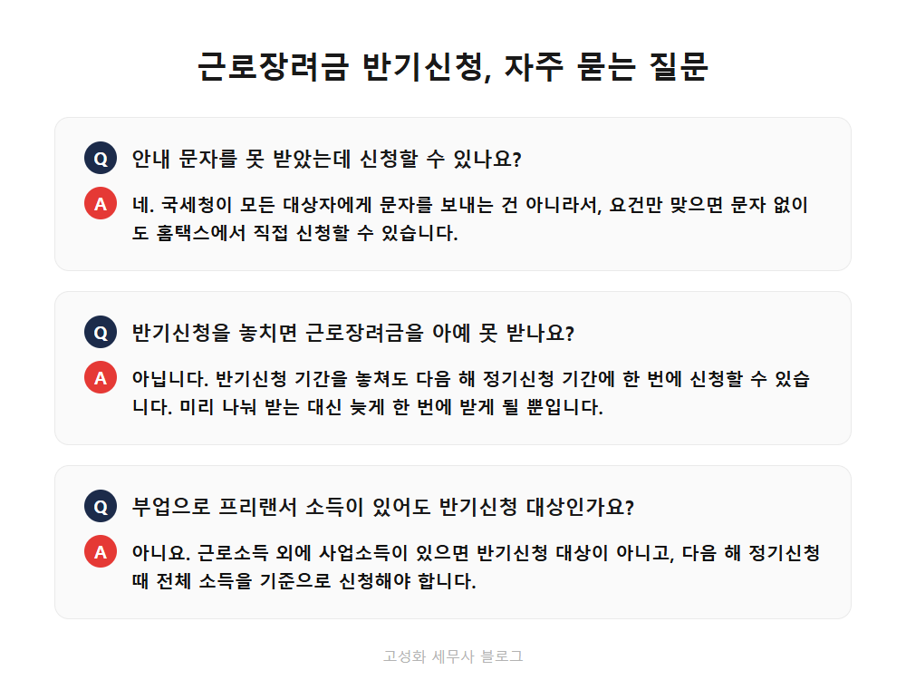

스마트스토어 셀러 간이과세의 숨은 함정

스마트스토어를 처음 여신 분들과 상담하다 보면 반복되는 장면이 있습니다. 사업자등록증을 받아 들고, 상품을 몇 개 올리고, 첫 주문 알림이 뜨는 순간까지는 다들 표정이 밝습니다. 그러다 석 달쯤 지나 부가세 신고 안내 문자를 받고 나서야 저를 찾아오시는 분이 많습니다. 성화세무회계는 그 문자가 오기 전에 미리 챙길 것을 알려드리는 걸 원칙으로 삼고 있습니다.
이 글을 보고 계신 분은 아마 ① 사업자등록 할 때 세무서 직원 안내대로 그냥 간이과세로 등록했거나, ② 매출이 늘면서 일반과세로 바꿔야 하는 건 아닌지 헷갈리거나, ③ "간이과세가 세금이 적으니 무조건 좋다"는 말만 듣고 별다른 검토 없이 유지하고 계신 분일 겁니다. 미리 말씀드리면, 간이과세가 항상 유리한 건 아닙니다. 초기에 재고를 많이 사들이는 셀러라면 오히려 손해를 보고 있을 수도 있습니다.
- 간이과세와 일반과세, 기준부터 정리하면
- 매입이 많으면 오히려 손해일 수 있습니다
한눈에 보기



정리하면
간이과세는 매출이 적고 매입도 적은 셀러에게는 여전히 유리한 제도입니다. 다만 재고 매입이 크거나 사업 초반에 투자가 몰리는 경우라면, 매입세액공제 구조 때문에 오히려 일반과세가 나을 수 있다는 점을 꼭 챙겨보시기 바랍니다. 간이과세 포기는 한 번 정하면 3년간 되돌릴 수 없는 결정이라 더욱 그렇습니다.
지금 매출이 얼마쯤 되고, 초기 매입 규모가 어느 정도인지에 따라 유리한 쪽이 갈립니다. 직접 계산해보기 막막하시다면 매출·매입 자료 들고 편하게 문의해 주세요. 시작 단계에서 한 번만 제대로 짚고 가면, 이후 몇 년간 신고할 때마다 훨씬 수월해집니다.
본문 전체와 근거 조문은 블로그에서 확인하실 수 있습니다.